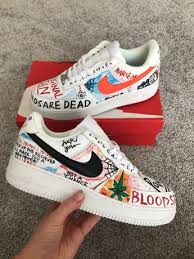
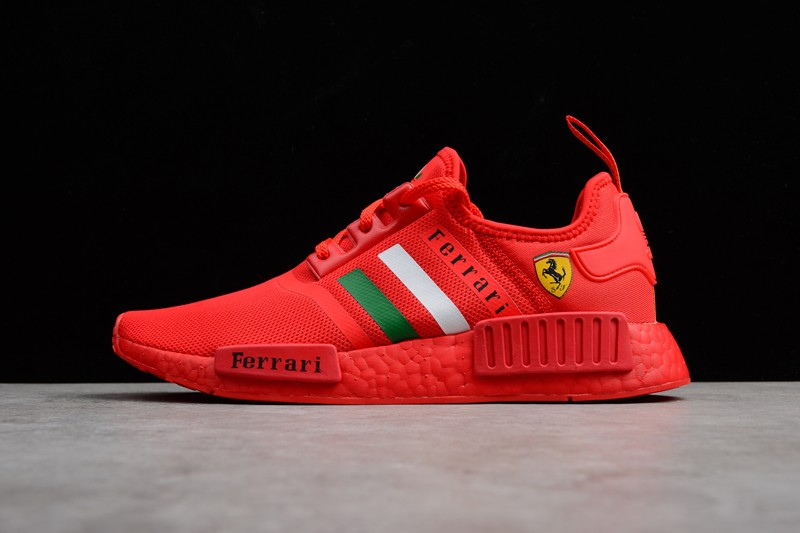

Dlaczego kochamy Customy?
Im bardziej angażujemy się w sneakersowy świat, tym więcej od niego oczekujemy. Więcej kolorów, więcej technologii, więcej wzorów, no i ogólnie to najlepiej więcej sneakersów. Czasami dochodzi do momentu, w którym znalezienie idealnego buta spędza nam już sen z powiek. Nadanie wyjątkowości naszym ukochanym sneakersom powoli staje się niegasnącym życzeniem. Niestety jednak znane marki nie zawsze słuchają tego, czego oczekują od nich sneakerheadzi. Stąd też głodny nowości i czegoś jak najbardziej swojego znajdujesz komfort w unikatowych customach.

Jak to się zaczęło?
Historia customów, przynajmniej w naszym nowoczesnym świecie, sięga do wczesnych lat dwutysięcznych. Wtedy to ludzie tacy jak Bobbito Garcia malowali różne kolory na logu swoich Nike Air Force 1 tak, aby zaskoczyć każdego sneakerheada, który na nie spojrzy. Nosiło się w ten sposób buty, których nikt inny w okolicy nie miał szansy posiadać. Idea zaczęła się rozwijać i zaczęto tworzyć na butach różnorodne motywy. Wmalowani w logo Nike pojawiali się znani raperzy, Scarface lub unikalne formy kolorów.
Czemu tak bardzo lubimy customy?
Customy to sneakersy dobrze nam już znane, ale w rozszerzonej, limitowanej wersji. Zmiany wprowadzone w design wahają się od prostej zmiany w kolorystyce, aż po kompletny makeover. Jako, że jest tak wiele elementów składających się na twoje ukochane sneakersy jest zatem równie dużo sposobów, na które możesz je odmienić by sprawić, aby były twoje własne.Dlaczego tak je lubimy? Customy mają to do siebie, i to bez znaczenia czy chodzi o kurtkę, torbę, czy właśnie but, że są czymś tylko TWOIM. Jest zawsze coś wyjątkowego w posiadaniu jednej jedynej rzeczy na świecie. Co za tym idzie, takie customy są dużo droższe niż podstawowa wersja buta. Niejednokrotnie nawet pięciokrotnie droższe. Stały się one tak popularne, że wyrosła z tego fenomenu dość pokaźna grupa zawodowców zajmujących się właśnie takimi przemianami. Tak naprawdę nie ma obecnie żadnych ograniczeń dla twoich nawet najśmielszych pomysłów na makeover. Taką usługę oferują już nawet znani artyści.
Customy to najczęściej dość drogi interes. Jednak coraz więcej znanych marek decyduje się na zabawę formą i odstępstwo od tradycji. Przykładem na to są chociażby kolorowe, wyróżniające się podeszwy jak tutaj i kolorystycznie unikatowe projekty Adidasa.
